Movie
映像日記
映像日記 2026年09月24日
兜家旅館様向けの提案用の見本です（公式サイトではありません。公式サイトは kabutoya.net）写真は現行サイトのものを仮に配置しています。本番の掲載前に、権利と内容を確認します。Bridge Works Studio
本文へスキップ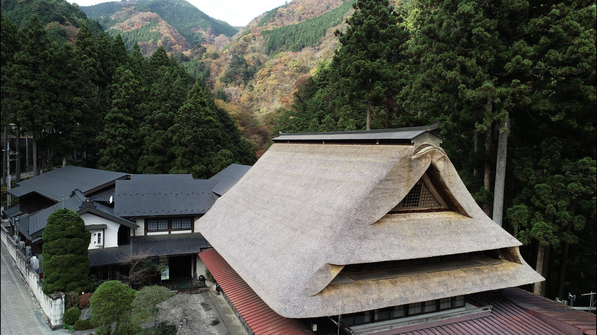
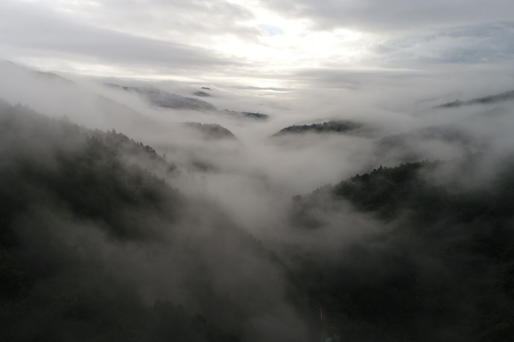
KAZUMA, HINOHARA — TOKYO
SCROLL
映像日記 2026年09月24日
南北朝時代の落人伝説を秘めた、数馬の里。
鎧の兜のような「兜造り」の母屋は、この地に伝わって四百年になります。
釘をほとんど使わない木組みと、厚い茅葺きの屋根。
囲炉裏端の炭火と、山の幸。新宿から二時間半、ここも東京都です。
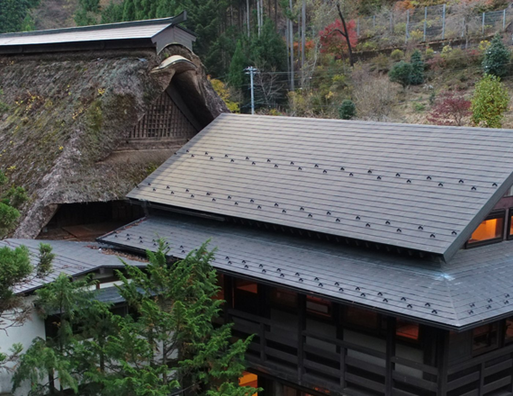
View more新宿から
電車とバスで
およそ二時間半。
東京都の本土でただひとつの村、檜原村。
新宿と同じ東京都の、いちばん西にあります。
※ バスの本数が限られます。時刻表を事前にご確認ください。所要時間は目安です。
※ 山あいの道です。冬季の道路状況は、お電話でお問い合わせください。
Hinohara, Tokyo 東京都、檜原村
兜家旅館の女将。数馬に四百年伝わる兜造りの母屋と、囲炉裏の宿を営んでいます。
お着きからお食事、朝のお見送りまで。迎えるひとのことを、すこしだけお話しします。
女将のご紹介※ 写真と文章は仮に置いています。本番サイトでは、女将のお写真と、直接おうかがいしたお話を掲載します。
しごとリアル（dip公式）
女将の一日を追った密着動画です。
TOKYO MX「多摩・立川オトナ時間 〜至高のひととき〜」
番組で、当館をご紹介いただきました。
Tokyo Tokyo（東京の観光プロモーション）
「EDO CULTURE」篇に、当館の建物が登場します。
空撮映像
当館の空撮映像です。
各配信元が公開している動画です。本番での掲載は、配信元に確認します。
ご予約はお電話にて承ります。囲炉裏の炭火焼き、猪鍋、別注のお料理のご希望は、ご予約の際にお申しつけください。
042-598-6136FAX 042-598-6741 ／ info@kabutoya.net
宿泊プラン・料金を見る ご予約フォームへ緑ふかい山々に抱かれた、奥多摩 檜原村。南北朝時代の落人伝説を秘めた数馬の里に、当兜家旅館はあります。
兜家の名の由来は、鎧の兜のような「兜造り」の母屋。正式には「富士系合掌造り」といい、この地に伝わってから四百年になります。太組の柱と茅葺きの屋根が、いつの日も人々のあたたかな団居（まどい）を見守ってまいりました。
そこかしこに、先人のやさしさが息づいています。いまひととき、ふるさとに戻ったお気持ちでおくつろぎください。
川のせせらぎ、鳥のさえずり、木のぬくもり。いつのまにか忘れていたものが、ここにはございます。ふと疲れたときに思い浮かぶ、みなさまの「ふるさと」になれればと存じます。
数馬の民家には、合掌造りの建物が多くありました。屋根の形が兜に似ているところから、かぶと式、兜造りとも呼ばれています。
建物は、釘をほとんど使わず、木と木を組み合わせて建てています。堂々とした柱や梁は、いまも大広間でそのままご覧いただけます。
なかは四層に仕切られています。一階と二階がふつうの部屋で、その上の三階と四階は板の間。板の間では、戦後まで養蚕がさかんに行われていました。繭の季節には、二階から上をさらに二層ずつに仕切り、あわせて七階として使うこともありました。
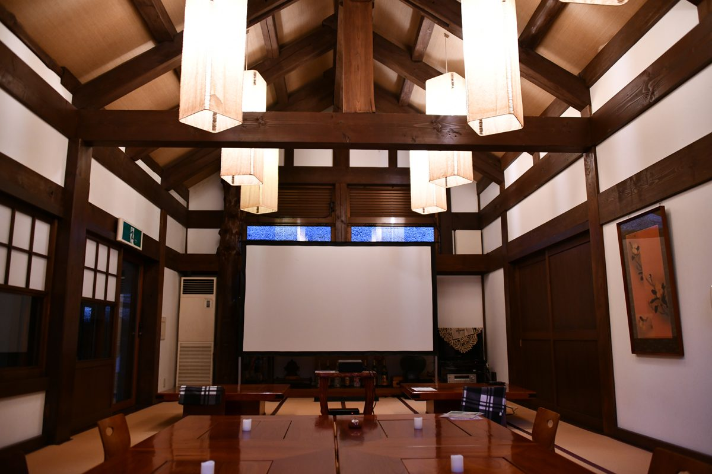
数馬の里には、南北朝時代の落人が住み着いたという伝説が伝わっています。深い山あいに隠れ里のように集落が続き、兜造りの家々が寄り添って建っています。
兜家の母屋も、そうした隠れ里の一軒として、この土地の暮らしとともにありました。四百年のあいだ、幾世代もの家族をここで迎えてきた家です。
どちらも、太い材を山形に組んで屋根を支える造りです。ちがいは、屋根の端のかたちにあります。
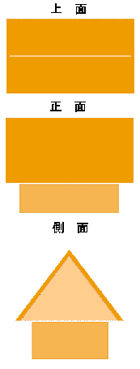
屋根は、本を伏せたような二面。端は、大きな三角の壁になります。
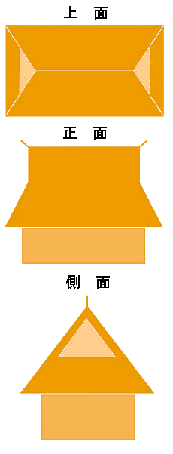
屋根の端にも茅をふきおろし、その上に三角の窓を開けます。裾の広がった姿が、兜に見えます。
図：兜家旅館ホームページ「合掌造りの建物」より
茅葺きの屋根、屋根の端の三角の窓、木組みの大広間。図で見たかたちを、実際の建物でご覧ください。
建物の映像（2分15秒）
富士系合掌造りは、富士火山帯を中心に分布しています。とくに多いのは、山梨県です。
江戸時代から、数馬と甲斐の国は山道で結ばれていました。この道を通って、ものの行き来と文化の交流がさかんに行われ、同じ造りの家が山のこちら側にも建てられていきました。
東京でありながら、家のかたちは甲斐とつながっている。数馬は、そういう土地です。
戦前まで、数馬の家はほとんどがこの合掌造りでした。けれども、屋根をふく茅は手に入りにくくなり、ふきかえには大きな費用がかかります。茅葺きの家は、少しずつ姿を消していきました。
いま、完全な形で残るものは四軒だけです。東京とは思えない山深い里に、わずかに残された、先人たちの知恵の遺産です。
堂々とした柱や梁を眺めながら、しばしそんなことに思いをはせていただくのも、よいものです。
まわりは、山また山。気温は都心より六度近く低く、夏でも明け方は寒さを感じるほどです。合掌造りの家は、梅雨のむし暑さも感じさせません。
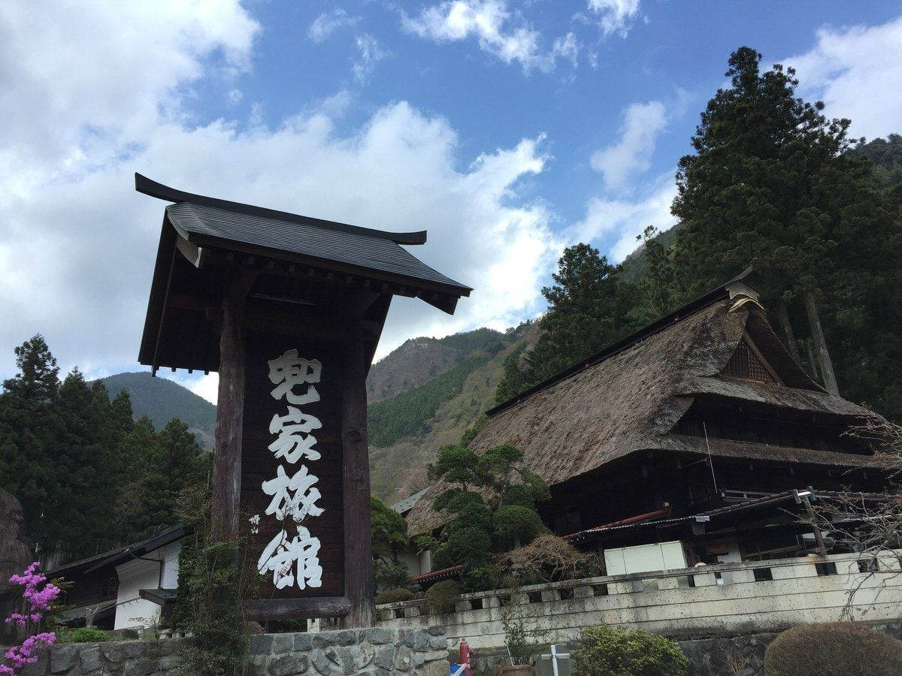
新緑と、茅葺きの屋根が映える頃。
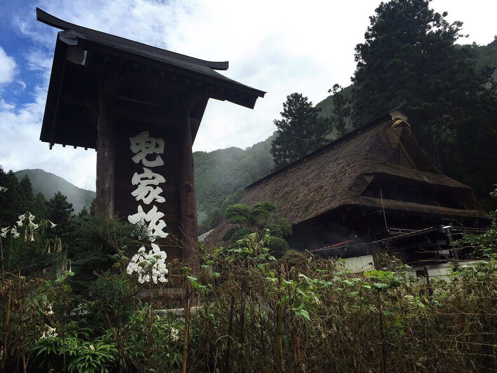
東京の西のはて。暑さ知らずの夏を。
満山の紅葉。落ち葉をかさこそと踏んで峠から見おろすと、なつかしい茅葺きが見えます。
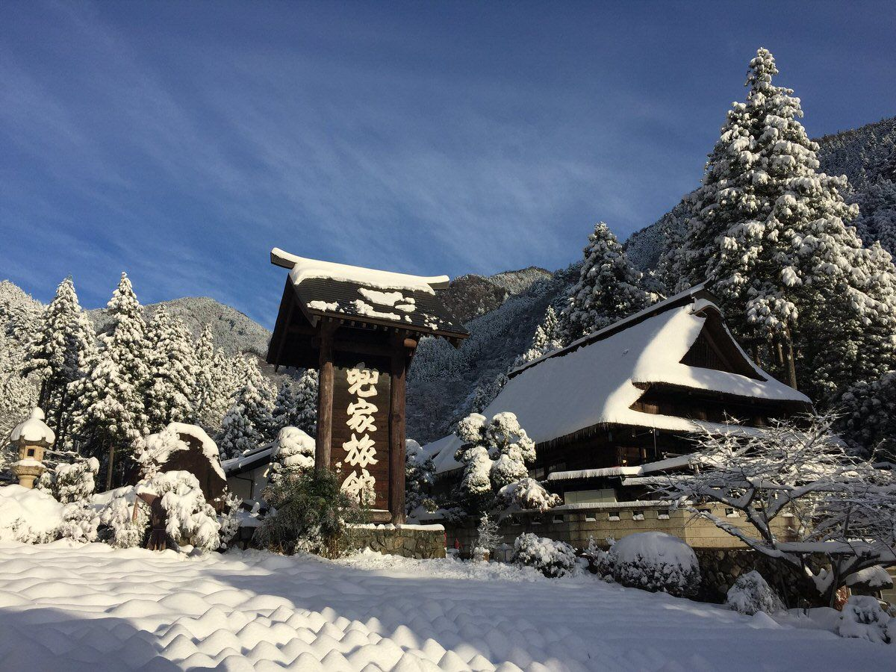
こたつに入って、山の気をいっぱいに吸う。ひとりの旅にも。
本館は、重厚なお部屋と大広間を備えています。新館には、囲炉裏のついた広々とした二間続きのお部屋がございます。
お食事には、山菜・川魚・猪など、山の幸をふんだんに用いています。新館では、囲炉裏端の炭火焼きも。日本各地の銘酒二十種も取り揃えていますので、お料理と一緒に、お好みの味を探してみてください。
奥多摩でのお泊まりに。山歩きの途中の、ひと休みのお食事処として。お気軽にお立ち寄りくださいませ。
01 / 03
新館の客室には囲炉裏を切ってございます。炭をおこし、串を刺して、焼けたものから召し上がっていただきます。
料理が運ばれてくるのを待つのではなく、火の前で過ごす時間そのものがお食事です。炭を入れるのは、炭を使うお料理のとき。火のそばで過ごす時間が、そのままお食事になります。
炭を熾し、串を立てる。肉と野菜、川魚。囲炉裏の炭火でご自分で焼いていただきます。
東京都内で、囲炉裏端の炭火焼きを。火のそばで食事をする時間そのものが献立です。
火を囲むと、自然と会話がゆっくりになります。急がず、焼けるのを待つ。その間も、ひとつの時間です。
肉と野菜、川魚。串に刺して、囲炉裏の炭火でご自分で焼いていただきます。
兜家旅館の女将。数馬に四百年伝わる兜造りの母屋と、囲炉裏の宿を営んでいます。
お着きのお茶から、囲炉裏のお食事、朝のお見送りまで。この宿で過ごす一日のそばには、いつも迎えるひとがいます。女将ご自身のお話は、本番サイトでは、直接おうかがいしてから、ご本人の言葉で掲載します。
女将が営んでいるのは、数馬に四百年伝わる兜造りの母屋。クギをほとんど使わず、木と木を組み合わせた建物です。
客室は全十六室、定員六十七名。新館の客室には囲炉裏を切り、炭火で山の幸を炙ります。この建物を、いま預かっています。
標高が高いぶん、季節の移りは都心と少しずれます。桜の頃も、雪の頃も、同じ門がそのつど違う顔になります。
まずは四季の概観から。そのうえで、月ごとの兜家旅館を一本ずつお届けしていきます。
桜は都心より遅れて咲きます。山菜がいちばん出る季節です。
都心より六度ほど低く、朝晩は肌寒いほど。雨のあとは霧が立ちます。
きのこと紅葉の頃。朝は谷が霧で埋まることがあります。
雪が積もると、茅葺きの屋根が真っ白になります。新館の客室では、囲炉裏の炭火で猪鍋を。
十二か月ぶん、一本ずつ公開していきます。いまご覧いただけるのは九月のみです。残りの月は、順にお届けしてまいります。
01 / 03
紅葉にはまだ早く、朝夕に霧が出はじめる頃。渓谷の水はもう冷たく、囲炉裏に火を入れる日が増えてまいりました。
標高が高いぶん、都心より六度ほど低い山あいです。夏の名残と、秋の気配が入りまじる時期を、月替わりでお届けしていきます。
山肌の色が変わるのは、もう少し先。木々はまだ青々として、空気だけが少しずつ涼しくなっていきます。
献立の基本は、一年を通して変わりません。地元で採れた山菜と自家栽培の野菜、川魚の洗いと塩焼き、囲炉裏端の炭火焼き。猪鍋は、一年を通して。
夜が冷えてくると、囲炉裏に火が入る日が増えます。九月は、その最初の合図が出はじめる月です。
山を降りたところを流れる水も、澄んだ色をたたえています。色づきが始まるまで、もうしばらくの静けさです。
献立の中心になる山菜と野菜は、当館の持つ山と畑から採れたものです。そこに川魚と猪が加わります。
一の膳から順にお出しします。日本各地の銘酒二十種もご用意しております。
地元で採れたもの。天ぷらや和え物に。
洗いと塩焼きでお出しします。
一年を通してお出しする、味噌仕立ての猪鍋。
新館の囲炉裏で、火のそばの炭火焼きを。
新館の囲炉裏のお部屋では、炭火を囲んでお部屋で。本館にお泊まりの方は、渓谷を望む大広間で。お泊まりのお部屋によって、お食事の内容と場所が変わります。
新館 囲炉裏のお部屋／お部屋で
山菜料理に、自家製の味噌だれで仕立てた猪鍋がつきます。囲炉裏の炭火にかけて、煮えたところから召し上がっていただきます。
新館 囲炉裏のお部屋／お部屋で
山菜料理に、炭火焼きがつきます。やまめ・牛肉・鶏肉・野菜の組み合わせと、猪肉・鹿肉・野菜の組み合わせから、お選びいただけます。
新館・本館／本館の方は大広間で
季節の山菜を中心にした、基本の献立です。やまめは香ばしく焼き上げた塩焼きで。お料理の量を控えめにしたい方にも向いています。
本館／大広間で
山菜料理に、鹿肉のしゃぶしゃぶ、または猪鍋を添えて。本館にお泊まりの方にご用意しています。
※ 囲炉裏に炭を入れるのは、炭火を使うお料理のときだけです（消防の決まりによります）。
山菜は地元で採れたもの、野菜は自家栽培のものを使っています。季節ごとに、膳にのる顔ぶれが変わります。
炭火焼きのやまめは、一時間ほどかけてじっくり焼き上げます。身はふっくらと、ほくほくに仕上がります。
炭火で焼いたお肉は、自家製のたれで。素材の味をそのまま楽しみたい方は、塩胡椒でどうぞ。
※ 猪鍋のコースの一例です。コースによって、猪鍋が炭火焼きや、やまめの塩焼きに替わります。献立は季節によっても変わります。
もう一品ほしいときは、別注のお料理を。お酒は、地元・秋川の地酒から、主人がすすめる日本各地の銘酒まで取り揃えています。
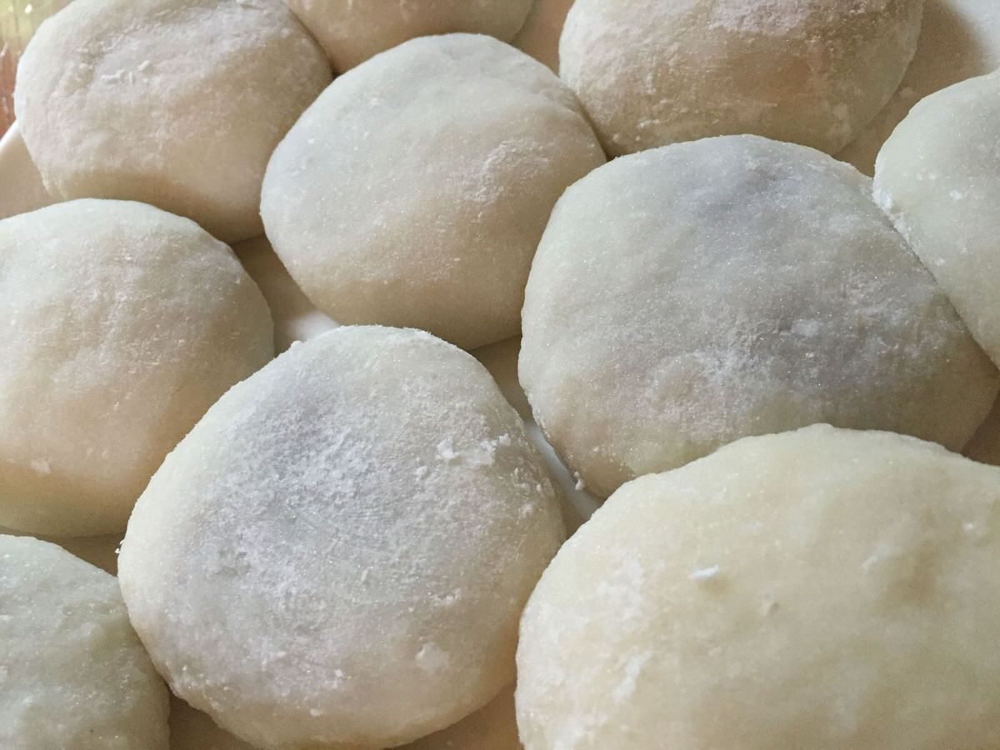
十五名様以上でお泊まりの際は、本館の玄関でもちつきをいたします。つきたてのお餅と、すいとんを、お好きなだけ召し上がってください。
ご家族のお集まりや、会社・サークルのご旅行に。大広間でのご宴会とあわせて、お電話でご相談ください。
奥多摩の山あいで、猪を味噌仕立てでお出ししています。くわしくは、猪鍋だけのページでご紹介しています。
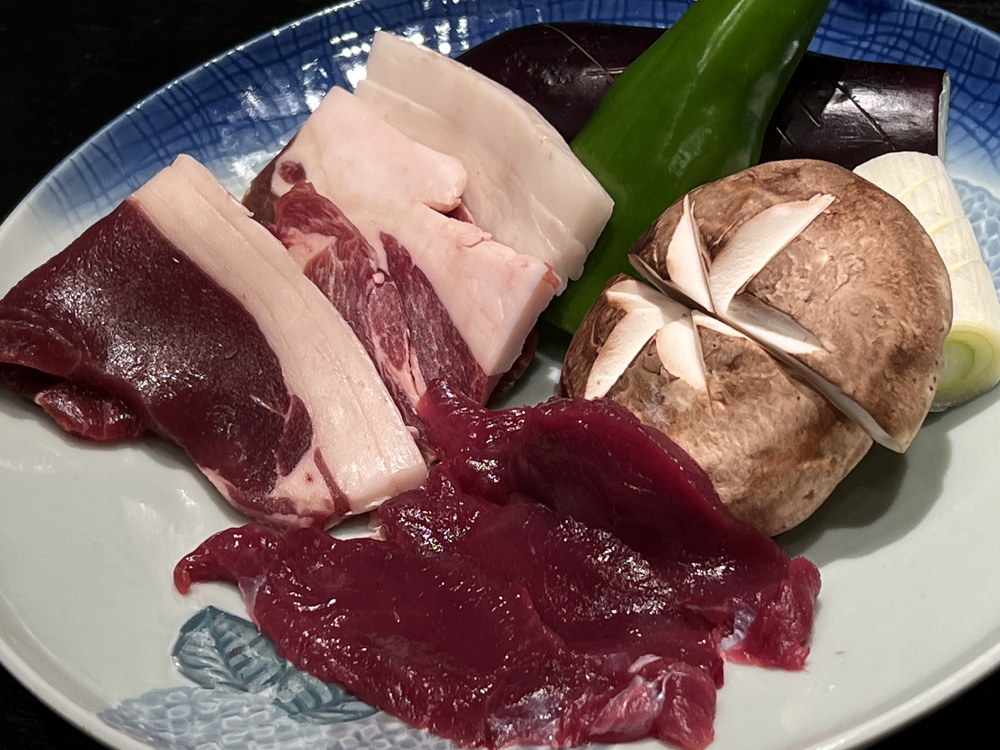
01 / 03
檜原村・数馬の山あいで、猪と鹿をお出ししています。囲炉裏の炭火と山の幸が、この宿の献立です。
猪鍋は味噌仕立てでお出ししています。臭みのない肉と、脂の甘み。
味噌仕立てにすることで、脂身と赤身、しいたけや葱などの野菜が、山の恵みそのままの一皿になります。
猪だけでなく、鹿もお出ししています。同じジビエでも、山ごと・季節ごとに表情が変わりますので、召し上がり比べていただけます。
新館の客室には囲炉裏を切ってございます。猪鍋も、この火のそばでお出しします。鍋が煮える音を聞きながら、ゆっくりと。
※くわしいご相談は、ご予約の際にお電話にて承ります。
猪鍋のたれは、当館で仕込む味噌仕立てです。厳選した猪肉を、山菜料理とともにお出しします。
ジビエと聞くと、獣肉のくせを思い浮かべる方もいらっしゃるかもしれません。野山を駆けた猪の肉は、脂肪が少なく、赤身が中心。あっさりとした味わいです。
冬の寒い夜は、火のぬくもりがそのままご馳走になります。
本館は重厚なお部屋と大広間を備え、新館には囲炉裏を切った二間続きのお部屋がございます。窓の外は、どのお部屋からも山です。
全十六室、定員六十七名。大人数でのご宴会には、大広間も二室ご用意しております。お部屋には、それぞれ名前がついています。たとえば「龍胆（りんどう）の間」。一部屋ずつ、造りも眺めも異なります。
太組の柱と大広間／山を望む
創業以来の母屋。柱も梁も、当時のままです。窓の外はすぐ山です。
二間続き／囲炉裏あり
囲炉裏を切った二間続きのお部屋。炭火焼きは、こちらでご用意します。
窓の外は、山の緑
障子を開け放つと、バルコニーの先はそのまま山の緑です。夏は涼しく、冬は静かです。
囲炉裏あり／炭火焼き
炭を熾し、串を立てて。火のそばで過ごす時間そのものが、お食事になります。
※お部屋の造りはひとつずつ異なります。ご希望がございましたら、お電話にてご相談ください。
新館のお部屋は、囲炉裏を切った二間続きが中心です（浴室付で囲炉裏のないお部屋が一室）。お食事はお部屋で。炭火を使うお料理の日は、囲炉裏に火が入ります。
浴室のついたお部屋も二室ございます。お部屋のお湯は、天然温泉「数馬の湯」です。
※ 新館のお部屋は、小学生以上のお客様からご利用いただけます。
本館は、兜造りの母屋そのものが客室です。洗面所とお手洗いのついたお部屋と、襖で仕切ったお部屋がございます。
お食事は、渓谷を望む大広間で。大広間には150インチのスクリーンがあり、奥多摩の空撮映像をご覧いただけます。映画や会議にもお使いいただけます。
※ 本館のお部屋は、小さなお子様連れでもご利用いただけます。
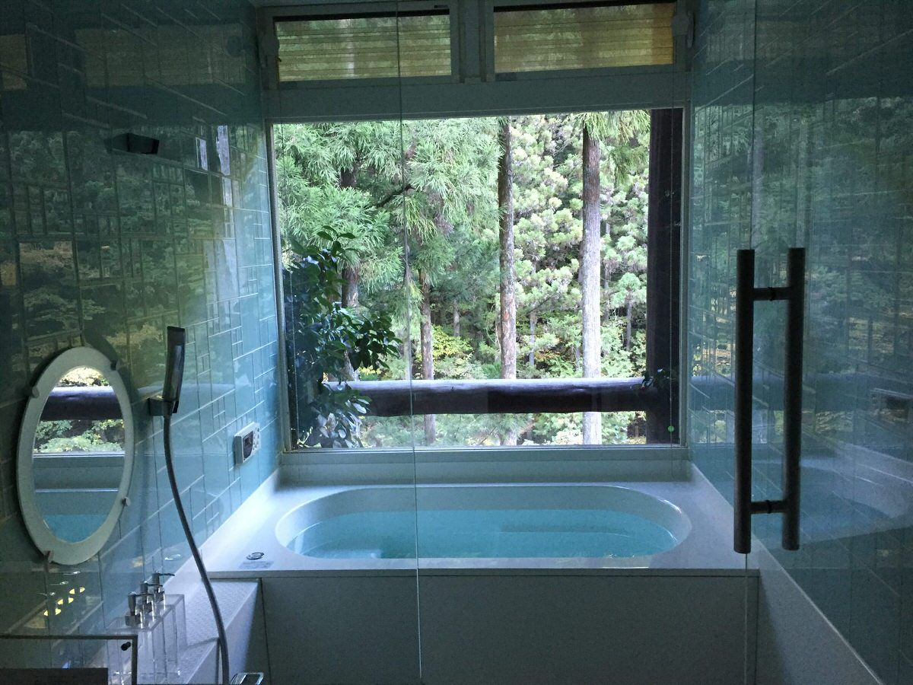
01 / 03
浴室のついたお部屋のお湯は、天然温泉「数馬の湯」。泉質は単純アルカリ泉です。男女別の大浴室には、ラジウムの人工泉をご用意しております。
大浴室は男女別に二室ございます。お泊まりが一組または二組の日は、貸切でお使いいただけます。ご家族やご友人だけで、ゆっくり湯につかってください。
湯船の窓いっぱいに、大きな蕗の葉と山の緑。湯につかりながら、季節ごとの緑を眺めていただけます。
浴室のついたお部屋のお湯は、天然温泉「数馬の湯」。男女別の大浴室は、ラジウムの人工泉です。
お泊まりが一組または二組の日は、大浴室を貸切でお使いいただけます。
竹垣の向こうは、そのまま山です。
檜原村は、東京都の本土で唯一の村です。緑ふかい山々と渓谷にかこまれ、都心より六度ほど低い山あいの気候が、四季の景色をくっきりと際立たせます。
檜原村には、滝と渓谷、そして冬だけの氷瀑があります。宿から足をのばせる場所を、ご紹介します。
東京でただひとつ、日本の滝百選に選ばれた滝。四段に分かれて落ち、一段目の落差は26メートル、全体では60メートルになります。夏はライトアップも。
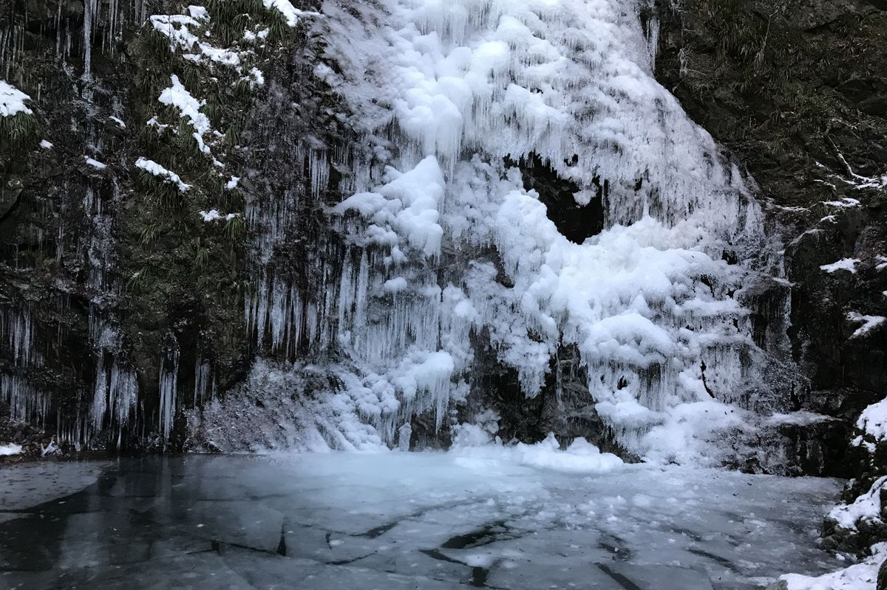
厳冬期には、払沢の滝がまるごと凍りつきます。結氷の具合は、年によって変わります。
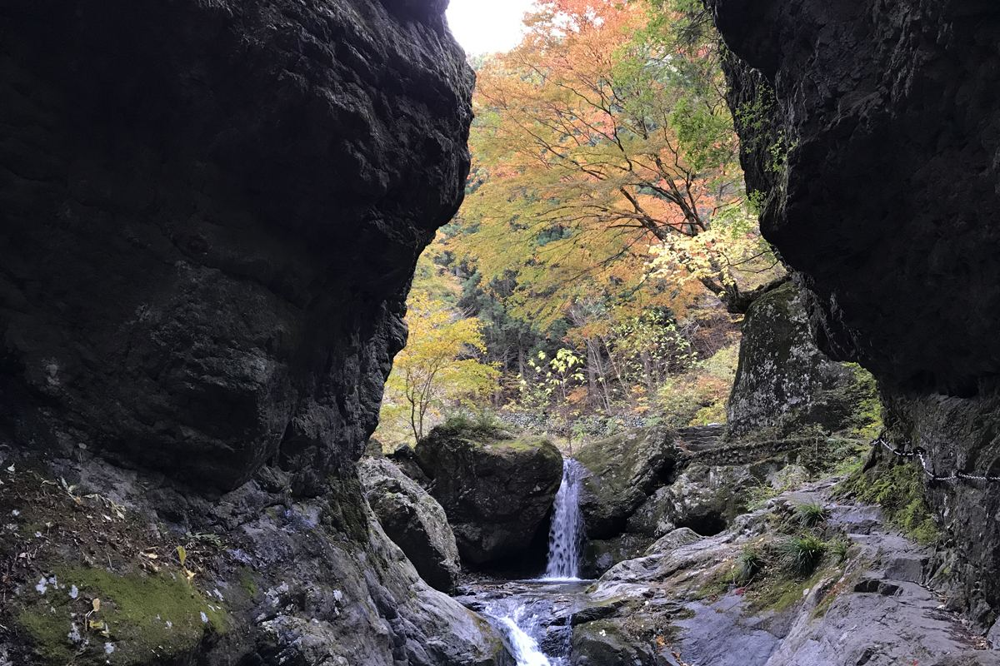
かのといわ。東京都の天然記念物です。長さ60メートル、谷底の幅は4メートルほど。切り立った岩壁のあいだを、沢が流れています。
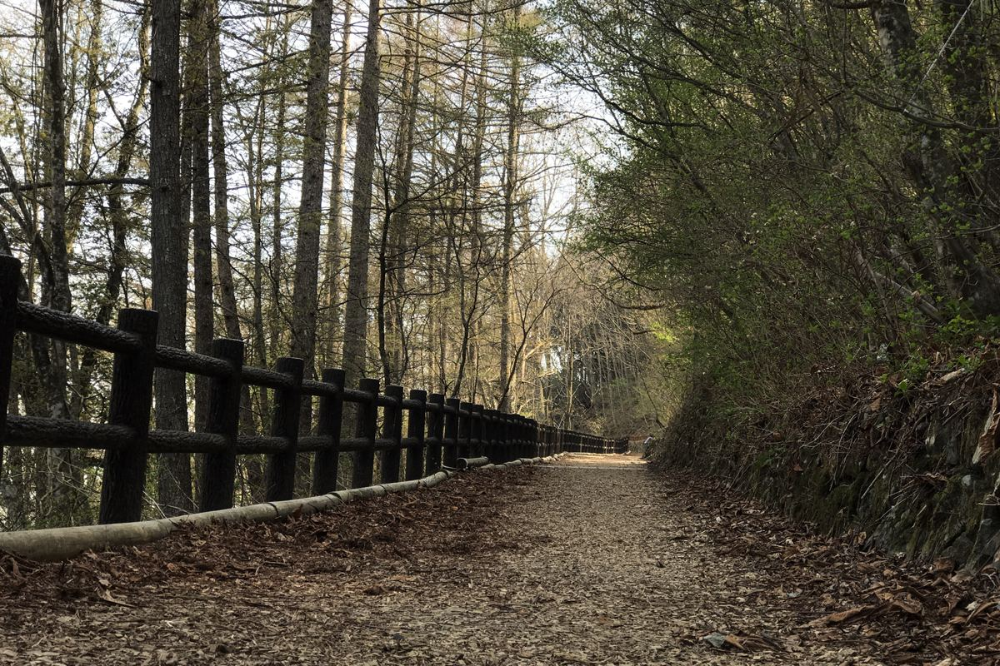
五つのゾーンに分かれたハイキングコース。森林館から三頭大滝までは、ウッドチップを敷いた歩きやすい道です。片道20分ほど。
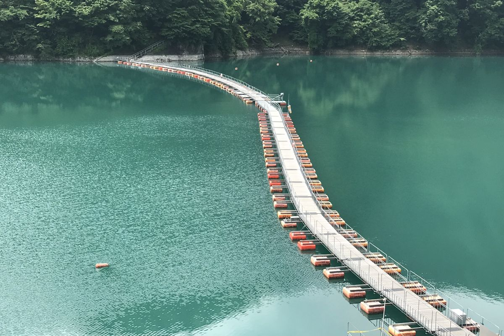
正式には小河内貯水池。湖面に渡された浮橋、通称ドラム缶橋を歩いて、対岸まで行くことができます。桜、新緑、紅葉、雪景色と、季節ごとに表情が変わります。
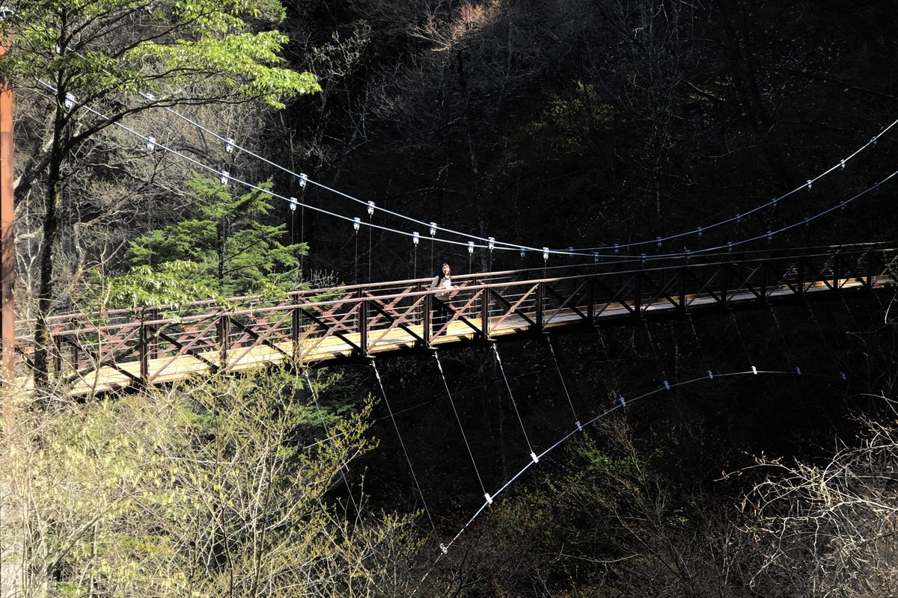
谷にかかる吊り橋。揺れる足もとの先に、深い山の緑が広がります。
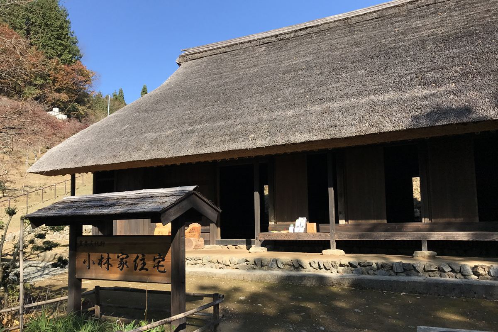
国の重要文化財。山の上に建つ、茅葺きの民家です。
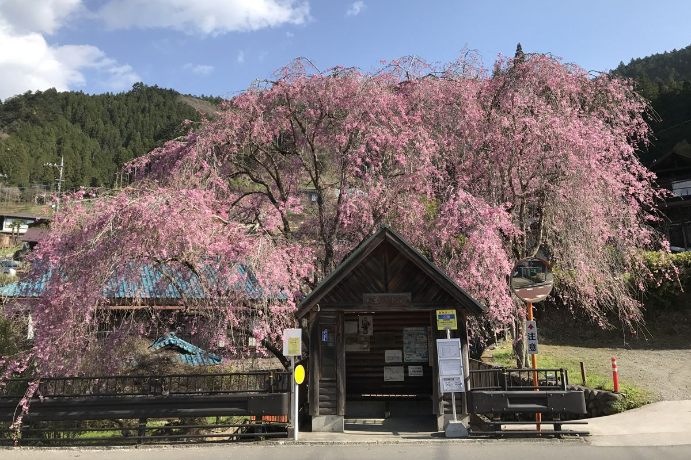
人里（へんぼり）のバス停。春になると、バスを待つ小さな小屋が花に包まれます。
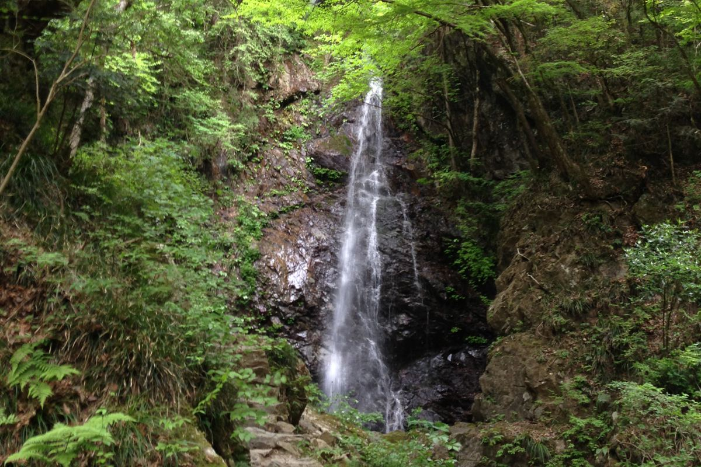
南北朝時代のはじめ、延元年間に、南朝方の中村家が戦乱を逃れてこの地に住みつきました。数馬という地名は、この地をひらいた中村数馬に由来します。
宿のまわりには、数馬分校記念館、九頭龍神社、龍神の滝、九頭龍の滝、夢の滝、三頭大滝があります。檜原温泉センター「数馬の湯」では、日帰りの入浴と軽いお食事もできます。
主人おすすめの場所をご案内しております。お気軽にお尋ねください。
主人が撮りためてきた空撮映像を「空中散歩」として公開しています。払沢の滝、神戸岩、都民の森、奥多摩湖。歩く前に、空からの眺めをどうぞ。
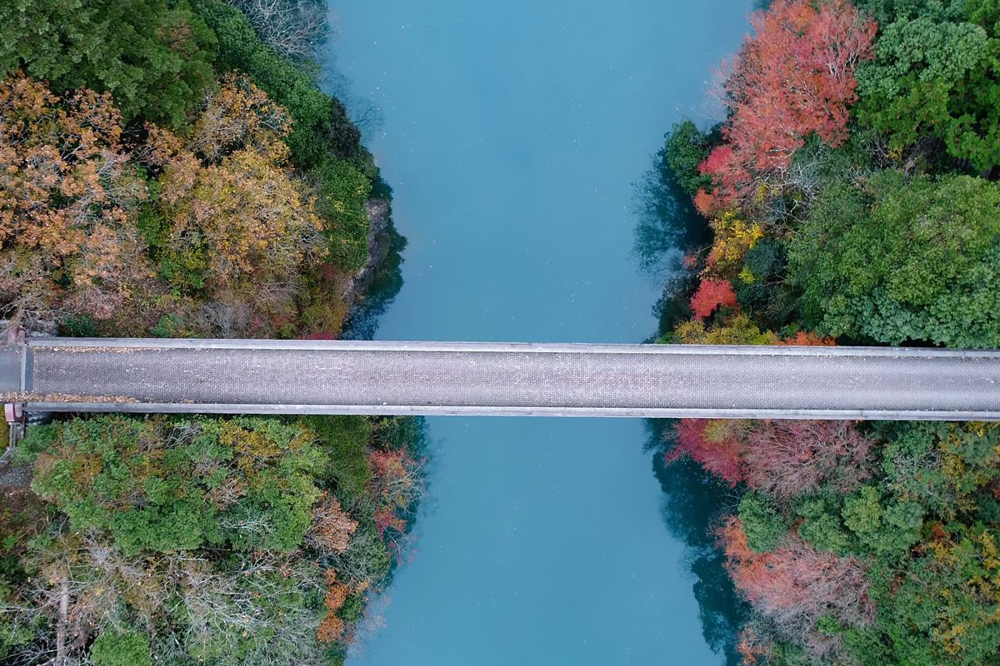
空中散歩（空撮映像）
東京都西多摩郡檜原村・数馬。新宿から、電車とバスで二時間半ほど。お車でもお越しいただけます。
新宿駅 →〈JR中央線・五日市線〉→ 武蔵五日市駅 →〈西東京バス 数馬行〉→「数馬」
圏央道 あきる野ICより、檜原街道を西へお進みください。駐車場もございます。
※ バスの本数が限られます。時刻表を事前にご確認ください。
武蔵五日市駅の改札を出ると、駅前にバスのロータリーがあります。一番のりばから、西東京バスの「数馬」行き、または「都民の森」行きにお乗りください。季節によって急行バスも走ります。
※ バスの本数が限られます。時刻表を事前にご確認ください。所要時間は目安です。
※ 駅前には、喫茶店とコンビニエンスストアがあります。
※ 奥多摩周遊道路は、夜間は通行できません。通れる時間は、夏が 8:00〜19:00、秋と冬が 9:00〜18:00 です。
※ 山あいの道です。冬季の道路状況は、お電話でお問い合わせください。
〒190-0221 東京都西多摩郡檜原村数馬2612
ご夕食とご朝食つきの一泊二食が基本です。囲炉裏の炭火焼き、または猪鍋のプランをお選びいただけます。
囲炉裏の炭火焼きは、新館のお部屋でご用意しています。肉と野菜、川魚を串に刺して、ご自分で焼きながら召し上がっていただきます。
猪鍋は、一年を通してお出ししているプランです。味噌仕立てで、臭みのない肉と脂の甘みをお愉しみいただけます。
一泊二食つき、お一人様の料金です。すべてのお部屋に、山菜料理がつきます。
| タイプ | 大人 | 幼稚園 | 乳幼児 |
|---|---|---|---|
| DX | 38,200円 | — | — |
| SD | 28,700円 | — | — |
| A | 28,100円 | — | — |
| B | 22,600円 | — | — |
| C | 20,000円 | 17,500円 | 4,000円 |
| D | 18,000円 | 16,000円 | 2,500円 |
| タイプ | 大人 | 幼稚園 | 乳幼児 |
|---|---|---|---|
| DX | 41,200円 | — | — |
| SD | 31,700円 | — | — |
| A | 30,600円 | — | — |
| B | 25,100円 | — | — |
| C | 21,500円 | 19,000円 | 4,000円 |
| D | 19,000円 | 17,000円 | 2,500円 |
※ 2025年4月1日からの料金です。
※ 年末年始（12月29日〜1月5日）は、シーズン期間の料金に、お一人様2,000円を加えた料金になります。
※ DX・SD・A・Bタイプ（新館）は、小学生以上のお客様からご利用いただけます。
| タイプ | お部屋 | お食事 | 夕食・朝食の場所 |
|---|---|---|---|
| DX | 新館。浴室・囲炉裏つき。洗面所・お手洗いつき | 炭火料理、または猪鍋料理 | 夕食は個室、朝食も個室 |
| SD | 新館。浴室つき（囲炉裏なし）。洗面所・お手洗いつき | 山菜料理 | 夕食は広間、朝食も広間 |
| A | 新館。囲炉裏つき。洗面所・お手洗いつき | 炭火料理、または猪鍋料理 | 夕食は個室、朝食は広間 |
| B | 新館。囲炉裏つき。洗面所・お手洗いつき | 山菜料理 | 夕食は個室、朝食は広間 |
| C | 本館の個室。洗面所・お手洗いつき | 山菜料理。鹿肉のしゃぶしゃぶ（＋2,800円）、猪鍋（＋4,000円）を加えられます | 夕食は広間、朝食も広間 |
| D | 本館。襖で仕切ったお部屋。洗面所・お手洗いは共用 | 山菜料理。鹿肉のしゃぶしゃぶ（＋2,800円）、猪鍋（＋4,000円）を加えられます | 夕食は広間、朝食も広間 |
DXタイプ／Aタイプ
囲炉裏を囲んで、山菜料理とともに。厳選した猪肉（石川県産）と鹿肉（北海道産）、やまめ、野菜を炭火で焼いて召し上がっていただきます。
DXタイプ／Aタイプ
宮崎県産の牛肉と鶏肉、やまめ、野菜を炭火で。やまめは一時間ほどかけて焼き上げます。お肉は自家製のたれ、または塩胡椒でどうぞ。
DXタイプ／Aタイプ
囲炉裏を囲んで、山菜料理と猪鍋を。このプランにやまめはつきませんが、別注で追加していただけます。
Bタイプ
炭火は使わず、囲炉裏を囲んで山菜料理を。お料理の量を控えめにしたい方に。やまめは、香ばしく焼き上げたものをお出しします。
Cタイプ／Dタイプ
お食事は大広間で。山菜料理とともに、厳選した猪肉のお鍋を召し上がっていただきます。
Cタイプ／Dタイプ
山菜料理とともに、鹿肉のしゃぶしゃぶを。脂肪が少なく、あっさりとした赤身のお肉です。
Cタイプ／Dタイプ
地元で採れた山菜と、自家栽培の野菜を中心に。やまめは、香ばしく焼き上げたものをお出しします。
※ 本番サイトでは、この位置に予約エンジン（空室カレンダー）を連携します。連携には宿泊予約システムのご契約が必要です。
兜家旅館の一日に密着した動画が公開されました
ディップ株式会社のYouTubeチャンネル「しごとリアル」で、当館の一日をご紹介いただきました。動画を見る
檜原街道の通行止めが解除され、路線バスも運行を再開しました
上川乗地区の都道の通行止めは、4月12日の午前9時に解除されます。路線バスも通常どおりの運行に戻ります。檜原街道は新緑が少しずつ始まり、桜が見頃の場所もあります。
檜原街道（上川乗〜人里間）の通行止めは、4月12日に解除されます
最新の情報は、檜原村役場のホームページと当館のSNSでお知らせいたします。
檜原街道（上川乗〜人里間）の通行止めについて
3月18日の土砂災害により、檜原街道の一部が通行止めになっています。期間中は公共交通機関がご利用いただけず、当館の送迎も行っておりません。ご不便をおかけいたします。
2025年4月から宿泊料金が変わります。直接のご予約が割安です
旅行会社を通したご予約と、当館への直接のご予約では、宿泊料金が異なります。直接のご予約のほうが割安で、お選びいただけるお部屋の種類も多くなります。宿泊プランを見る
猪肉と鹿肉の、ジビエ炭火焼きが加わりました
新館の囲炉裏のお部屋に、新しいお食事が加わりました。猪肉は、能登半島地震の被災地のお役に少しでも立てればと、石川県から取り寄せています。鹿肉はエゾシカです。お食事を見る
冬限定「合鴨鍋とフグのちり蒸し」プランのご案内
2024年2月3日から3月31日までの期間限定で、合鴨葱鍋、フグと野菜のちり蒸し、よもぎざる蕎麦などをお出しするプランをご用意しました（終了しました）。
焚き火ラウンジ（予約制）を始めました
ご宿泊の方だけの、各回一組限定の焚き火ラウンジです。焚き火ラウンジを見る
「ぶらぶらサタデー」で檜原村が紹介されました
「タカトシ温水の路線バスで！」2022年5月21日の放送で、東京の秘境として檜原村が紹介されました。
ジビエ料理を始めました
本館にお泊まりの方に、鹿肉のしゃぶしゃぶと猪鍋をご用意しました。猪鍋を見る
人里（へんぼり）バス停の、しだれ桜
檜原村・人里地区のバス停のしだれ桜が見頃です。周辺のご案内を見る
アメニティについて
歯みがきセットとカミソリは、フロントでお申し出いただいた方にお渡ししています。プラスチックごみを減らすための取り組みです。
数馬の集落と、茅葺き屋根の雪景色
奥多摩周遊道路は、除雪が終わるまで通行止めです。交通情報をご確認のうえ、お出かけください。
※ 現行サイトの What's New から、おもなお知らせを載せています。本番サイトでは、宿の方がご自身で更新できるようにします。
奥多摩を歩いたあとの昼に、夕暮れの山あいで夜に。お泊まりのお客様と同じ山の膳を、ランチとディナーでお出ししています。
お席は、新館の広間、本館の個室、囲炉裏の個室からお選びいただけます。ご用意に時間をいただくため、完全予約制です。
新館の広間
季節の山菜を中心にした、基本の献立です。煮物、刺身こんにゃく、とうふ、わさび漬、やまめの塩焼き、とろろ御飯。
本館の個室
山菜料理に、抹茶と食前酒、水菓子がつきます。個室で、ゆっくり召し上がっていただけます。
囲炉裏の個室
山菜料理に、自家製の味噌だれで仕立てた猪鍋を。囲炉裏の炭火にかけて召し上がっていただきます。
囲炉裏の個室
山菜料理に、やまめ・牛肉・鶏肉・野菜の炭火焼きを。囲炉裏を囲んで、ご自分で焼きながら。
※ どのコースも、やまめのお造り、または、やまめのお造りと山菜の天ぷらを加えることができます。料金はお電話でお問い合わせください。
週末はのんびり過ごしたい。けれど観光地は移動ばかりで、かえって疲れてしまう。そう感じたことはありませんか。
日帰りのお客様にも、お泊まりのチェックアウトのあとにも、檜原村の静かな森と渓谷をゆっくり味わっていただきたい。渓谷展望カフェは、そのための場所です。
窓辺からの眺めを、ただぼんやりと。荷物を置いて、静かな沢でたたずむ。表情の違ういくつもの滝を歩く。思い立ったら、すぐに手に入る“のんびり”を。
渓谷を眺めながら、ゆっくりと丁寧に淹れたコーヒー、紅茶、ハーブティーを。BIOワインで、ほろ酔いになるのもよいものです。
フェアトレードのコーヒーとハーブティー。檜原村の集落で無農薬栽培される「ひのはら紅茶」。ソフトドリンクも、すべてオーガニックです。
飲みものは、数馬の沢水と、ひのはら露頭水のどちらで淹れるかをお選びいただけます。地層の合わせ目から湧く、檜原の水です。
焚き火ラウンジの映像（2分50秒）
檜原村の山あいで、焚き火を眺めながら、お酒とともに。ご宿泊の方だけの、予約制の焚き火ラウンジです。
お部屋の囲炉裏で炭火焼きを楽しむ前のひとときに。あるいは、夕食のあとの、ゆっくりした時間に。各回一組さまだけでお使いいただきます。
おすすめは、沢の水で割るウイスキーと、沢の水で淹れるコーヒーです。
屋根のある場所で行いますので、雨の日でもお楽しみいただけます。強い雨や風、雪などの荒天の日は中止します。山の天気は変わりやすく、当日に中止を決めることもあります。
煙のにおいが服につきます。小さな火の粉で、まれに服に穴があくこともあります。汚れてもよい、綿の服でお越しください。
飲みものと食べもののお持ち込みは、ご遠慮いただいています。お客様のご都合による取り消しは、二週間前から前日までが利用料の50％、当日は100％を申し受けます。
山を歩いた日の夜に。着衣のまま、全身をほどよい力でもみほぐし、肩・腰・足の疲れやこりをやわらげます。
お部屋までお伺いしますので、終わったらそのままお休みいただけます。
※ 医療行為ではなく、くつろいでいただくためのサービスです。ご体調によっては、コースの変更やお断りをすることがあります。妊娠中の方はご利用いただけません。
※ はじめに、かんたんな問診をいたします。施術中にご気分がすぐれないときは、すぐにお知らせください。
※ ご予約の時間にお部屋にいらっしゃらない場合は、取り消しとさせていただきます。
お食事でお出ししている自家製の梅干と、檜原村の刺身こんにゃくを、ご自宅でも。オンラインでご注文いただけます。
自家製・塩分ひかえめ／大 280g・小 150g
兜家旅館で漬けている、塩分ひかえめの梅干です。
檜原村特産／500g
そのまま、青のり入り、黒ごま入り、ひじき入りの四種類。四種のセットもございます。
檜原村特産／無農薬
檜原村の集落で、農薬を使わずに育てて手作りされている紅茶です。渓谷展望カフェでもお出ししています。
檜原村特産
檜原村の水を、そのままボトルに。
※ こんにゃく四種と梅干（大・小）を合わせたセットもございます。
※ お申し込みの時点では、ご予約は成立していません。宿からのお返事をお待ちください。
※ ただいま、ご予約は一泊のみ承っております。
※ 受付は、ご宿泊日の三か月前の同日からです。
宿から、空室のお返事をさしあげます。ご予約は、まだ成立していません。お返事をお待ちください。
※ 見本のため、実際には送信されていません。入力された内容は、この画面の中だけで表示しています。
KAZUMA, HINOHARA — TOKYO
SCROLL
Kazuma is a mountain hamlet that carries a legend of refugees from Japan's Nanboku-cho wars. Its main house is shaped like a samurai's helmet — kabuto-zukuri — with a charcoal hearth glowing at its heart. Two and a half hours from Shinjuku. This, too, is Tokyo.
This page and the next are a two-page summary for English-speaking guests. The rest of the site — our seasons, our food, our rooms, and how to reach us — is written in Japanese. If you read Japanese, continue to the Japanese homepage. Our staff speak limited English, but email is usually the easiest way to reach us: info@kabutoya.net.
Kabutoya sits in Kazuma, a hamlet deep in the mountains of Hinohara — the last place on Tokyo's mainland still called a village. Local legend says that warriors defeated in the wars between Japan's Northern and Southern Courts once took refuge here.
Our name comes from the shape of the roof. Kabuto means a samurai's helmet, and the steep thatched gable looks like one. The style is properly called Fuji-kei gassho-zukuri, and it has stood in this valley for four hundred years.
Before the Second World War, almost every house in Kazuma was built this way. Only four now survive in complete form. This is one of them.
Local legend says that warriors defeated in the wars between Japan's Northern and Southern Courts settled in this valley. Hidden deep in the mountains, the kabuto-zukuri houses of Kazuma still stand close together, like a village in hiding.
This page is a short English summary. The full story continues in Japanese.